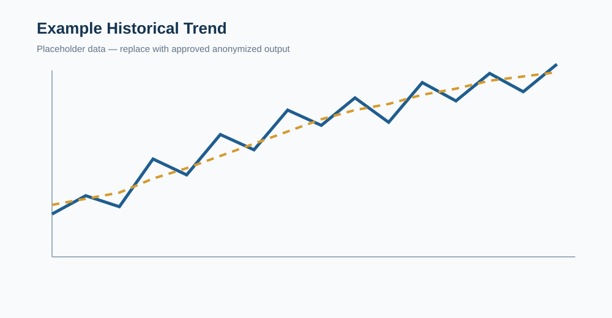

The challenge
Historical records were spread across raw files with inconsistent naming, formatting, and data quality.
INTERACTIVE ENGINEERING PROJECT
A reusable workflow that transforms historical grid operating data into organized records, statistical analysis, and visual reports for engineering studies.
Public-facing content is anonymized and excludes proprietary system information.
PROJECT OVERVIEW
Historical records were spread across raw files with inconsistent naming, formatting, and data quality.
I developed an end-to-end process to parse, standardize, clean, store, analyze, and visualize the data.
Engineers can access consistent historical insight faster while reducing repetitive manual work.
INTERACTIVE WORKFLOW
Each stage converts raw information into a more useful engineering output.
EXAMPLE OUTPUT

ABOUT THE PROJECT
This project demonstrates how engineering software can turn large historical datasets into practical, repeatable insight.
Electrical Engineering Student
South Dakota State University